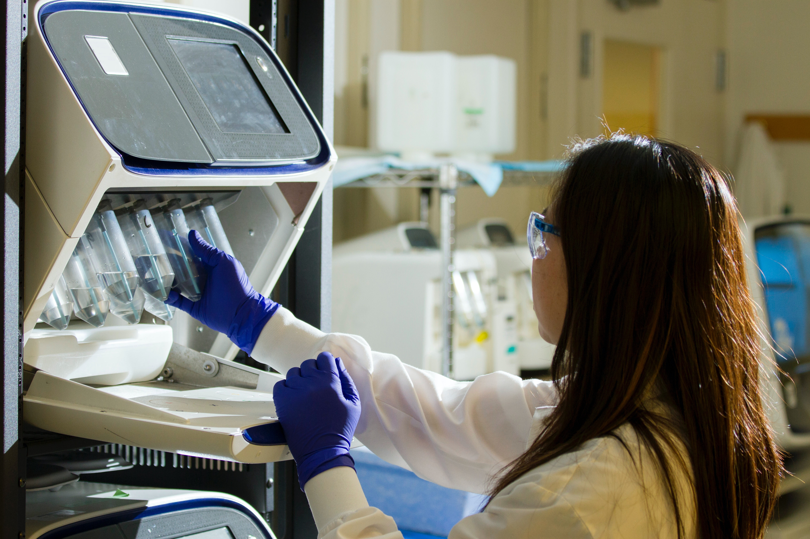

화공생명공학부의 교육과정은 미래지향적 산업분야에 적합한, 융합적 사고능력을 갖춘 글로벌 공학인재 양 성을 위해 ‘신소재공학’, ‘바이오 및 의공학’, ‘시스템 및 제어공학’, ‘표면 및 계면공학’, ‘에너지 및 환경공학’ 의 5가지 대표적 첨단 분야와 관련된 전공교과로 구성되어 있습니다. 먼저 ‘신소재공학’ 분야는 재료의 미 세구조와 특성을 이해하고 실제 다양한 공학적 문제에서 요구되는 새로운 성질과 기능을 가지는 신소재를 개발 · 응용하는 세부 학문 분야로서 연성소재, 전자 및 정보소재, 나노응용소재 등을 포함합니다.
‘바이오 및 의공학’ 분야는 생명현상의 이해를 기반으로 다양한 공학적 지식을 바이오 및 의학 분야에 적용, 진단시스 템, 새로운 치료제를 개발하는 응용 분야로서 생체재료 및 바이오센서공학, 시스템생물공학 및 합성생물학, 항체 및 단백질 공학 등을 포함하고 있습니다. ‘시스템 및 제어공학’ 분야는 여러 가지 공학 시스템의 공정 설계 및 제어에 필요한 기술전반을 다루며, 전자 · 환경 · 생명공학 산업의 제품 생산에서 필수적인 요소로서 전자소재공정 및 에너지공정의 설계 · 분석 · 제어 등을 포함하며, ‘표면 및 계면공학’ 분야는 콜로이드와 화 장품공학과 관련된 내용을 배울 수 있고, 마지막으로 ‘에너지 및 환경공학’은 지속가능한 형태로 활용될 수 있는 다양한 에너지원들을 개발하고 환경에 영향을 미치는 요인을 공학적으로 분석, 저감할 수 있는 다양 한 기술을 다루는 분야로서 이차전지 및 전기화학공학, 신재생에너지, 환경유해물질 저감 및 전환 등에 대 해 다루고 있습니다. 이와 같은 다양한 세부분야에 대한 학습은 체계적인 학년별 교육과정을 통해 구체화 됩니다.
